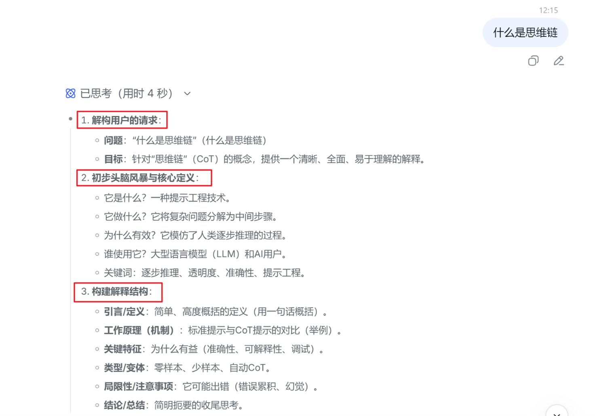
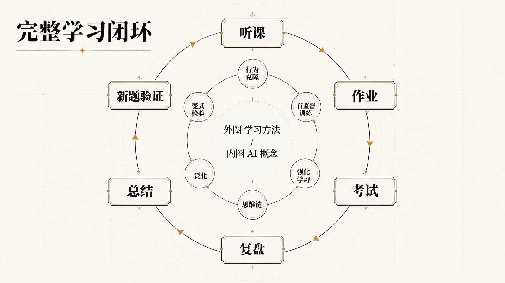

明确目标 → 高质量模仿 → 监督纠错 → 自主试错 → 复盘思考 → 提炼范式 → 泛化迁移。

创造欲，不只是创作艺术作品，而是把脑海中的想法主动转化为外在成果的冲动。
很多时候，我们不是没有想法，而是无法把脑海中模糊、跳跃的思考，整理成清晰、完整的表达。
思维链不是把答案写得更长，而是让思考过程能够被记录、检查和改进。
老师讲题 = 高质量标注，作业批改 = 外部反馈
你要关注的不只是“对不对”，而是：
学习质量 = 正确率 × 可解释性 × 迁移能力
简单模板：
